Médecine · Recherche
Deadman
Derrière les constantes et les dossiers, il reste toujours quelqu’un à comprendre. Une présence attentive au milieu des signaux de Bridges.
Au-delà des duels, des visages accompagnent chaque traversée. De Bridges à Drawbridge, retrouvez les figures des deux jeux et les traces qu’elles laissent sur la route.
Derrière les constantes et les dossiers, il reste toujours quelqu’un à comprendre. Une présence attentive au milieu des signaux de Bridges.

Une silhouette rouge au bord d’une mer sans fin. Au-delà des relais et des montagnes, la Grève conserve son appel.

Les fondations d’un pays à réunir, et les liens qu’il reste à retisser. Son dossier appartient aux premières pages de cette traversée.
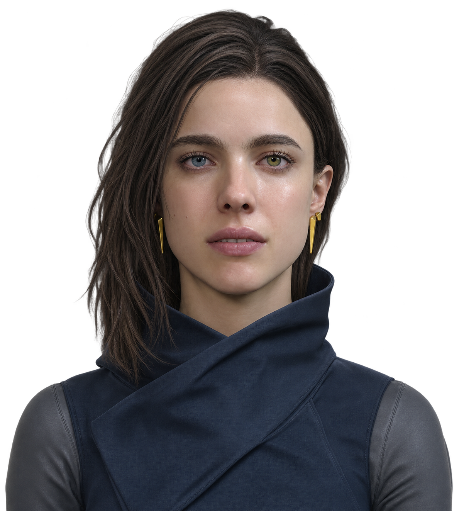
Au pied des sommets, un autre lien attend d’être renoué. Le réseau chiral prend forme entre les mains de celle qui veille sur Mountain Knot.
De nouvelles silhouettes, d’autres tenues et des compagnons de route. Chaque dossier conserve la version à laquelle il appartient.
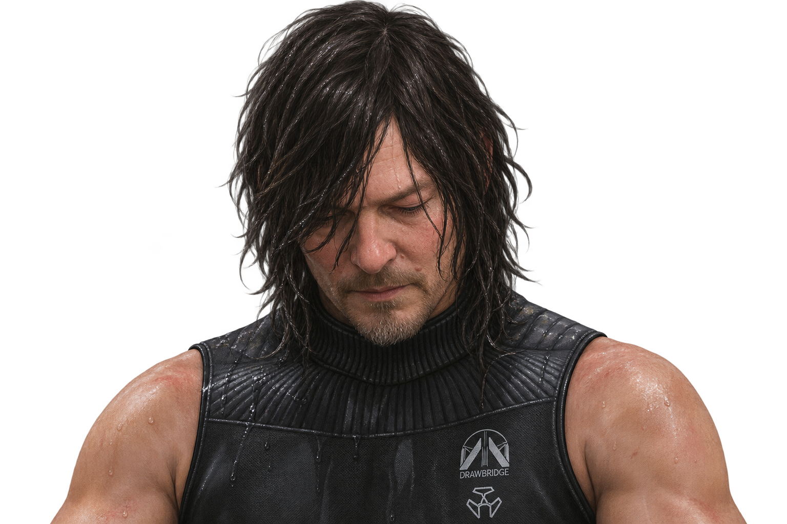
Sam dans sa tenue Drawbridge sombre, au début d’une nouvelle traversée.
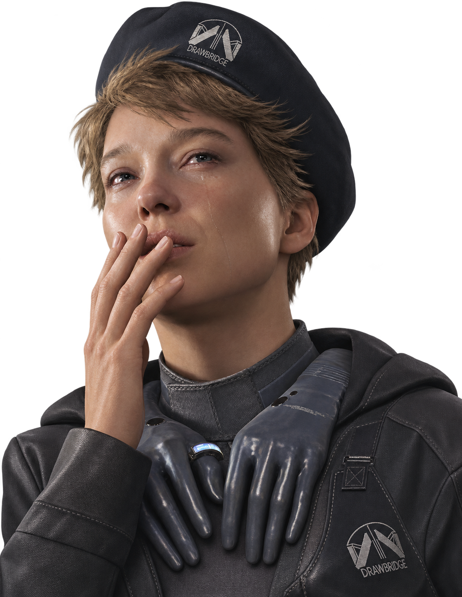
Les cheveux courts, le béret et les mains sculptées du col marquent cette nouvelle tenue de Fragile.
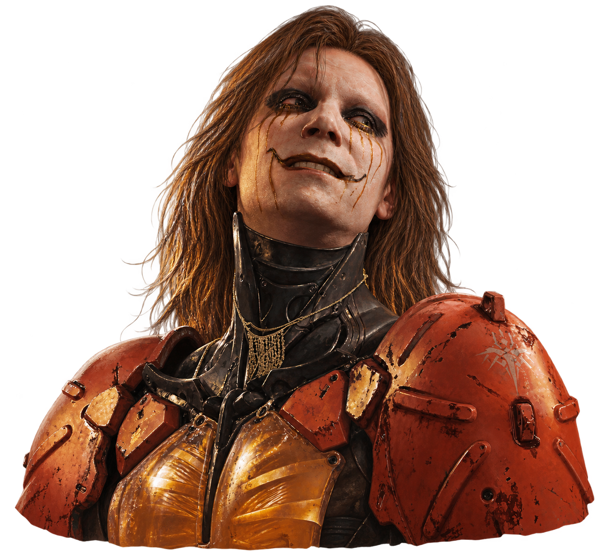
Le visage peint de Higgs et son armure rouge usée, dans sa version On the Beach.
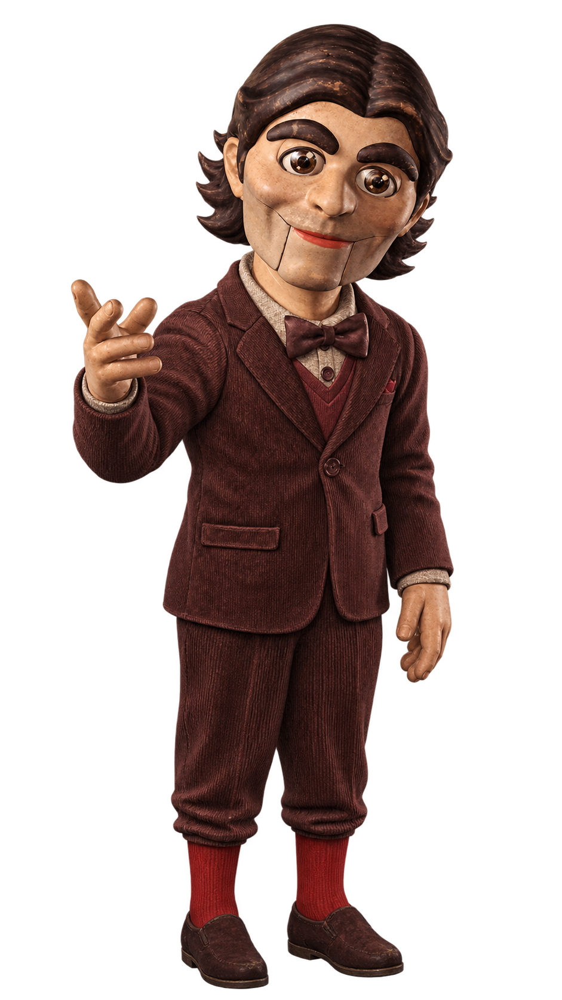
Un visage articulé, un costume de velours côtelé et des chaussettes rouges : Dollman dans une pose fixe.
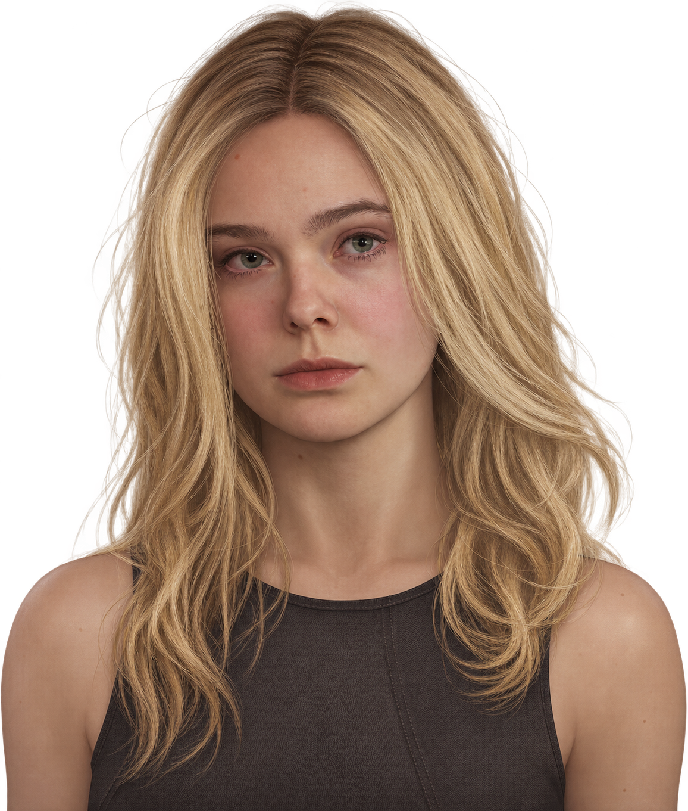
Tomorrow dans sa tenue sombre, cheveux blonds libres sur les épaules.
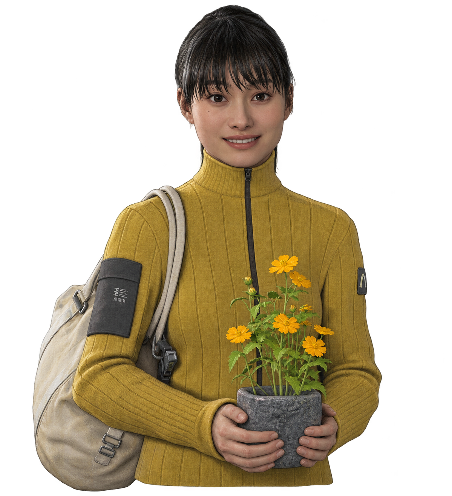
Rainy tient un pot de fleurs, avec son pull jaune côtelé et son sac clair.
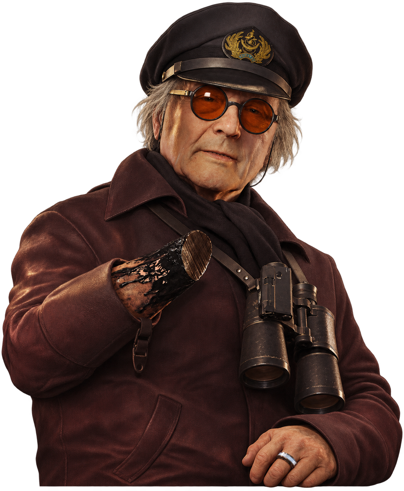
La casquette, les verres ambrés et les jumelles composent le portrait de Tarman.
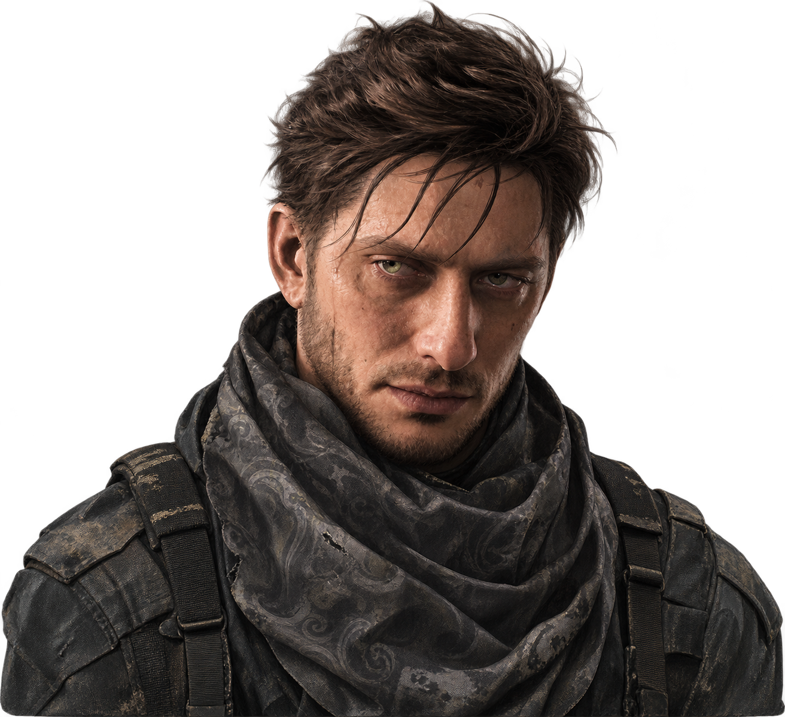
Neil apparaît avec son écharpe et son équipement sombre.
Les cheveux bruns attachés et le haut gris de Lucy, dans un portrait issu de la nouvelle traversée.
Un stéthoscope, des lunettes rouges et des gants bleus : les repères du portrait de Doctor dans On the Beach.
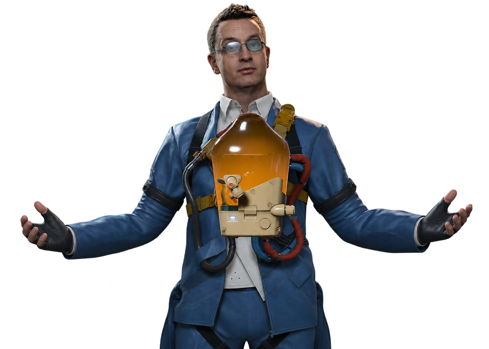
Heartman apparaît en costume bleu, avec son appareil au torse. Ce dossier conserve sa version On the Beach.
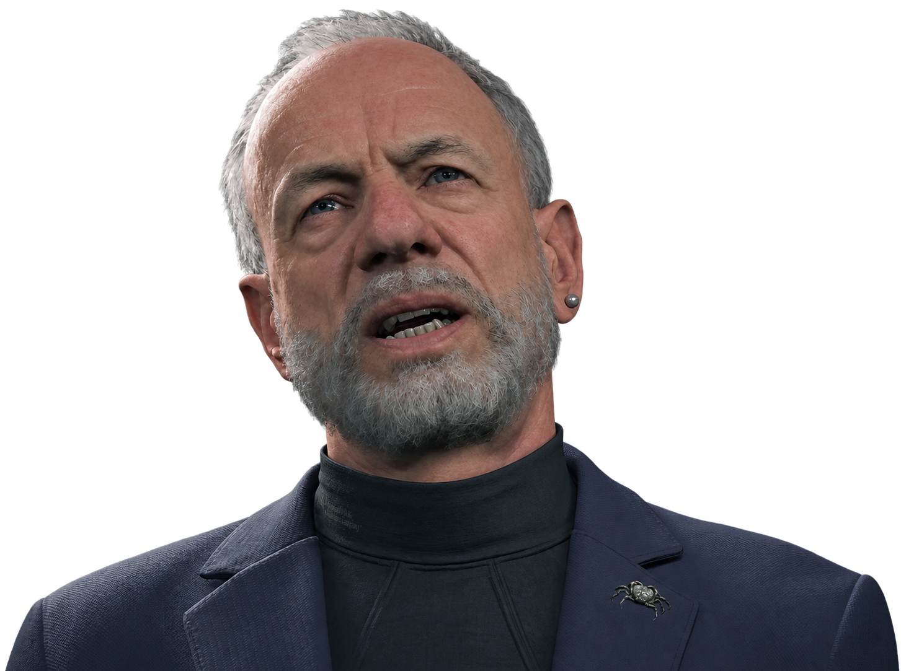
Les cheveux et la barbe gris, le col montant et la broche crabe composent ce portrait de The President.